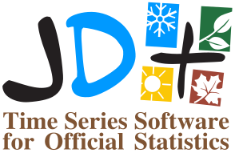

JDemetra+ documentation
Preface
Welcome to the JDemetra+ on-line documentation.
JDemetra+ is an open-source software for seasonal adjustment and time series analysis, developed in the framework of Eurostat’s “Centre of Excellence on Statistical Methods and Tools” by the National Bank of Belgium with the support of the Bundesbank and Insee.
To learn more about this project you can visit Eurostat CROS Portal
To keep up with all JDemetra+ related news head to the JDemetra+ Universe Blog
This website is under construction, in the meantime you can fill a large number of the gaps by referring to the previous version of the on-line documentation.
